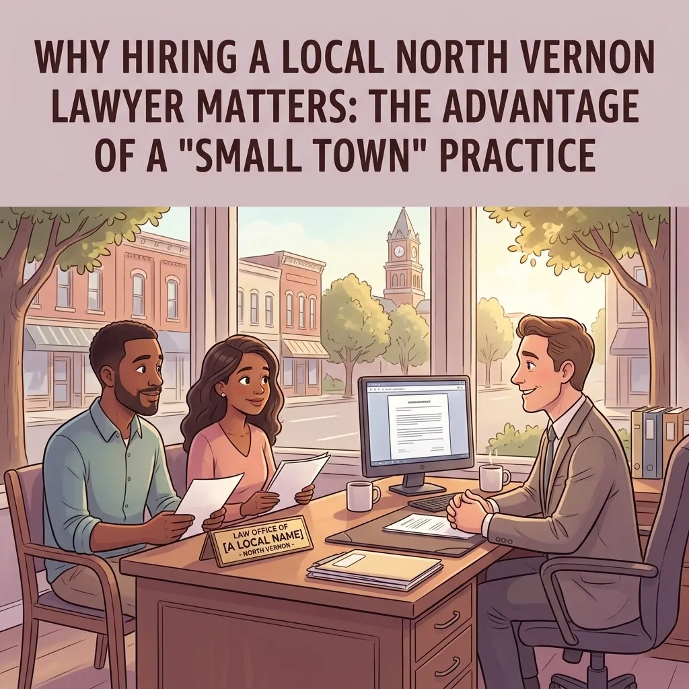
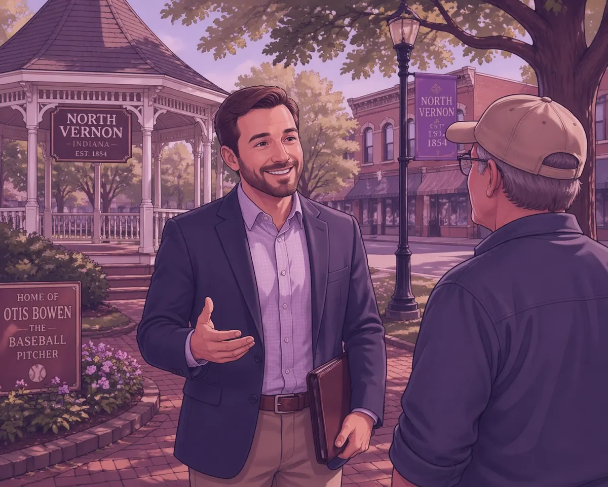
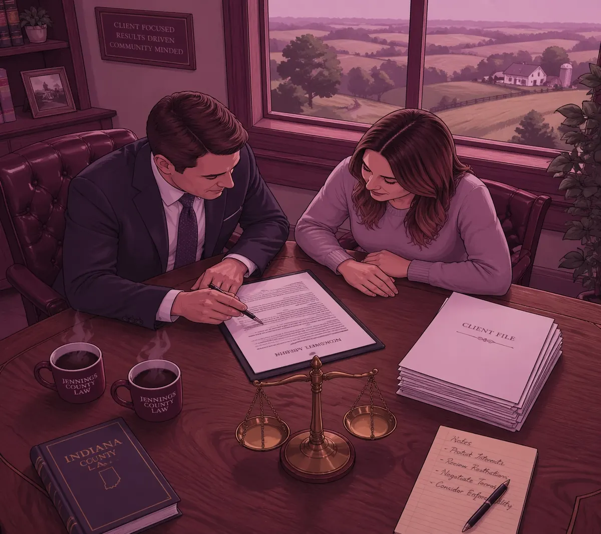

Why Hiring a Local North Vernon Lawyer Matters: The Advantage of a “Small Town” Practice

When you face a legal problem, it can feel like you are standing all alone. Whether it is a family matter, a ticket, or a disagreement over a contract, you want someone by your side who knows the lay of the land. In a place like Jennings County, that person should be a neighbor.
My name is Chris Doran, and I am not just a lawyer in North Vernon Indiana. I grew up right here. I went to school here, I shop at the same grocery stores as you, and I understand what life is like in our corner of the state. Today, I live in Vernon, just a stone's throw from the courthouse.
Being a Jennings County attorney is about more than just knowing the law books. It is about knowing the people. It is about being a part of the community in North Vernon, Vernon, Commiskey, Hayden, and Scipio.
I Know This Town Because It Is My Home
There is an old saying that “home is where the heart is.” For me, home is Jennings County. Growing up in North Vernon taught me the value of hard work and looking out for your neighbors. When you hire an attorney in North Vernon Indiana, you want someone who treats you like a person, not just a case number.
Because I grew up here and live in Vernon now, I don't see my clients as just names on a folder. I see you at the gas station. I see you at community events. That drives me to work harder. I want to make sure my neighbors get a fair shake in the legal system.
When you call Chris Doran Law LLC, you aren't talking to a big city firm where you have to jump through hoops just to leave a message. You are talking to someone who knows the shortcuts on Highway 50 and the best places to grab lunch in town. That local connection matters more than most people think.
The “Small Town” Advantage in the Courtroom
Legal rules are the same across the state of Indiana, but every county works a little differently. Each courthouse has its own rhythm. The way things happen at the Jennings County Courthouse isn't exactly the same as how they happen in Indianapolis or Louisville.
As a lawyer Jennings County residents can rely on, I spend a lot of time in our local courts. I know the staff, the procedures, and the expectations of our local legal system. This “small town” advantage means I don't have to guess how a certain office prefers its paperwork or how a hearing might be scheduled.
Knowing the people inside the system helps me solve your legal needs more efficiently. I have handled a wide variety of complex legal matters during my tenure, and that experience helps me give you clear options. You can learn more about how our local system works in our Jennings County Court 101 guide.
We Wear Many Hats Here
In a big city, a lawyer might only do one very specific thing. But a lawyer in North Vernon Indiana has to be ready for anything. I like to say that we “wear many hats” here at the firm. One day I might be helping a family through a tough custody battle, and the next I might be helping a driver understand their rights after a traffic stop.
Because our community is smaller, I have to be well-versed in many areas of the law. Whether you are facing drug charges or you are wondering if field sobriety tests are required, I have the experience to help you navigate those waters.
I listen to what you have to say and give you options. I don't use fancy words to try to sound smart. I talk to you like a neighbor. We sit down, we look at the facts, and we decide on the best path forward together.
No Hidden Costs or Big City Travel Fees
One of the biggest headaches with hiring a lawyer from out of town is the cost. If you hire someone from a big city, they often charge you for the time it takes them to drive down to Jennings County. Those travel fees can add up fast.
When you work with a Jennings County attorney, those costs disappear. Since I live in Vernon and my office is local, I don't have to charge you to “commute” to your own local court. This is part of being transparent and honest about how I run my practice.
I believe legal help should be accessible to everyday people. You shouldn't have to pay a premium just because your lawyer lives two hours away. By staying local, I keep my overhead lower and pass that value on to you. If you want to know more about my background, feel free to check out my about me page.

Collaborative Problem Solving for Our Community
I believe the best way to solve a legal problem is by working together. When you come into my office, we are a team. I don't just tell you what to do. I explain the situation, tell you what the law says, and then we talk about what you want the outcome to be.
Whether it is a family law issue like preparing for a custody hearing or a criminal defense matter, the goal is always the same: to get the best result for you so you can move on with your life.
Jennings County is a place where people help each other out. If your neighbor's tractor is stuck, you grab a chain and help pull it out. I look at the law the same way. If you are stuck in a legal mess, I am here to help pull you out.
From Commiskey to Scipio: We Serve All of Jennings County
While my office is in North Vernon and I live in Vernon, I am proud to serve every corner of this county. I know that folks in Hayden or Scipio have the same needs as those in town. You need an attorney North Vernon Indiana who is willing to listen and work hard.
Local knowledge goes beyond the courthouse. It includes understanding the local economy, the local schools, and the things that matter to families in our area. When I talk to a client from Commiskey, I know the area they are talking about. I understand the context of their lives. That makes a big difference when building a case or negotiating a settlement.
If you are looking for a lawyer in North Vernon Indiana, you deserve someone who knows the community as well as you do.

Why Direct Communication Matters
Have you ever tried to call a big business and spent twenty minutes talking to a machine? It is frustrating. When you have a legal problem, you are already stressed out. You don't need more frustration.
At Chris Doran Law LLC, I pride myself on being reachable. I use a straightforward, no-nonsense approach. If you have a question, I give you a straight answer. If there is bad news, I tell you directly so we can deal with it. If there is good news, we celebrate it.
Being a “small town lawyer” means being available. It means when you walk into the office, you see me. You don't see a junior assistant who was hired last week. You get the benefit of my years of experience and my deep roots in this community.
Let’s Solve Your Legal Needs Together
Legal issues can be scary, but they don't have to be overwhelming. Having a neighbor who understands the law can make all the difference. I am proud to be an attorney in North Vernon Indiana and a resident of Vernon. I am proud to serve the people of Jennings County because this is my home, too.
If you are facing a legal challenge, don't wait. The sooner we start looking at your options, the better. Whether it's a criminal matter, a family dispute, or just a general legal question, I am here to listen and help.
You can visit our contact page to set up a time to talk. Or, feel free to browse more of our blog posts to find answers to common questions about Indiana law.
I look forward to helping you navigate the legal system with the honesty and personal touch that only a local neighbor can provide. Let's get to work on your case and find the solution that fits your life.
Looking for a local attorney who knows Jennings County?
Schedule a Phone Call Today!